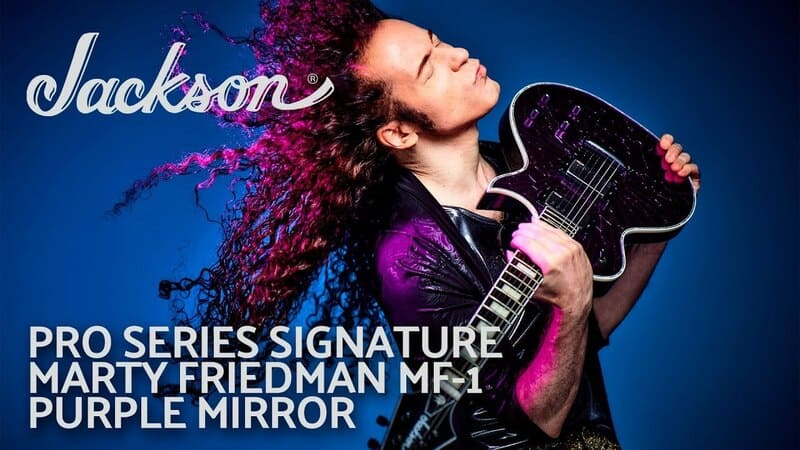

Jackson Guitars and Marty Friedman
Team Up for the Pro Series Signature MF-1

Scottsdale, AZ (February 4, 2021) -- Jackson continues
its longstanding relationship with guitarist Marty Friedman by honoring the
virtuoso with the all-new Pro Series Signature Marty Friedman MF-1.
One of the most influential and respected players in
the world, Marty Friedman’s impactful and game-changing contributions to heavy
metal and guitar in general continue to inspire generations of musicians and
music fans to this day. He defined modern guitar playing with Jason Becker in
Cacophony, was a key element in the wildly successful rise of thrash pioneers
Megadeth, and with his “Marty-esque” improvisations and exotic fusion of Eastern
and Western music, has achieved global success as a solo artist.
Metal magnificent, the all-new Pro Series Signature
Marty Friedman MF-1 features a mahogany body with a cracked Purple Mirror top
finish, complete with 3-ply white/abalone/white body binding, all-black hardware
and reverse Jackson 3x3 (3 over, 3 under) AT-1 black headstock.
“It’s just a gorgeous guitar,” said Friedman. “The
people at Jackson came up with a way to develop this – it’s actually really a
custom type of job but they managed to do it in such a way to put it out to the
public at a reasonable price point.
“I used this model in the photo session for my Tokyo
Jukebox 3 album, and you really can’t take a bad picture with this guitar.
Depending on how the light hits it, it really changes its personality and image
a lot.”
The 24.75”-scale signature model is loaded with
premium features to match the demanding needs of an elite and intricate player
like Friedman, including a graphite-reinforced mahogany set-neck with scarf
joint and bound 12” radius ebony fingerboard with 22 jumbo frets and pearloid
block inlays. Passive EMG MF signature humbucking pickups deliver a sound that
sings and screams, with a three-way toggle switch, two tone and two volume
controls to wrangle all of the subtle nuances out of the guitar.
The sig instrument is complete with a Jackson
TOM-style adjustable bridge with anchored tailpiece for improved intonation and
enhanced sustain.
Watch the company's video demo:
MEGADETH GUITARIST KIKO LOUREIRO
INVITED MARTY FRIEDMAN TO PLAY ON OPEN SOURCE SOLO ALBUM "TO SHOW THAT
MUSIC IS NOT A COMPETITION"
Guitar World has published an in-depth review of
Megadeth guitarist Kiko Loureiro's latest solo album, Open Source, complete with
an interview. During the breakdown of the record, Loureiro addresses his
decision to have former Megadeth guitarist Marty Friedman guest on the track
"Imminent Threat"..
Loureiro: "One of the worst things about the internet
is how people are comparing you with other guitarists. I’m exaggerating, but for
the past five years, most phrases on the internet that have 'Kiko' and
'Megadeth' in them have 'Marty Friedman' in the same paragraph, right? 'I prefer
Kiko!' or 'I prefer Marty!'
I thought the greatest message would be to have Marty
Friedman (on the record), not only because he was the Megadeth guy, but to show
that music is not a competition. The best way to show that I’m into this
open-source, collaborative vibe is to bring the guy over as a guest."
Read the complete review and interview
here.
Dave Mustaine Speaks on Why He Had to
Fire Early Megadeth Members, Talks How Marty Friedman Behaved at
Audition
During a conversation with Gibson, Megadeth frontman
Dave Mustaine looked back on the band's early days, firing guitarist Chris
Poland and drummer Gar Samuelson, hiring Marty Friedman, and more.
One of the most influential and respected players in
the world, Marty Friedman’s impactful and game-changing contributions to heavy
metal and guitar in general continue to inspire generations of musicians and
music fans to this day. He defined modern guitar playing with Jason Becker in
Cacophony, was a key element in the wildly successful rise of thrash pioneers
Megadeth, and with his “Marty-esque” improvisations and exotic fusion of Eastern
and Western music, has achieved global success as a solo artist.
Metal magnificent, the all-new Pro Series Signature
Marty Friedman MF-1 features a mahogany body with a cracked Purple Mirror top
finish, complete with 3-ply white/abalone/white body binding, all-black hardware
and reverse Jackson 3x3 (3 over, 3 under) AT-1 black headstock.
“It’s just a gorgeous guitar,” said Friedman. “The
people at Jackson came up with a way to develop this – it’s actually really a
custom type of job but they managed to do it in such a way to put it out to the
public at a reasonable price point.
“I used this model in the photo session for my Tokyo
Jukebox 3 album, and you really can’t take a bad picture with this guitar.
Depending on how the light hits it, it really changes its personality and image
a lot.”
The 24.75”-scale signature model is loaded with
premium features to match the demanding needs of an elite and intricate player
like Friedman, including a graphite-reinforced mahogany set-neck with scarf
joint and bound 12” radius ebony fingerboard with 22 jumbo frets and pearloid
block inlays. Passive EMG MF signature humbucking pickups deliver a sound that
sings and screams, with a three-way toggle switch, two tone and two volume
controls to wrangle all of the subtle nuances out of the guitar.
The sig instrument is complete with a Jackson
TOM-style adjustable bridge with anchored tailpiece for improved intonation and
enhanced sustain.
Watch a Marty live video playing the legendary Tornado of Souls
Solo: